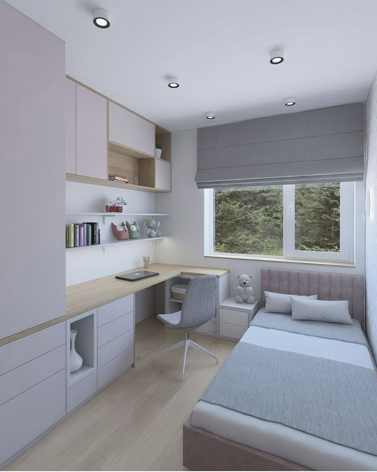
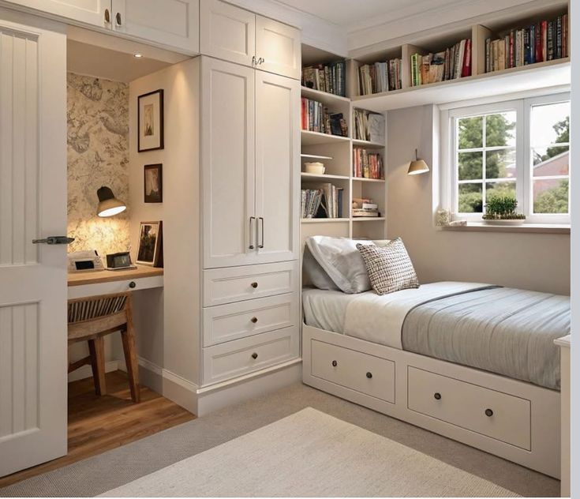

La iluminación es un elemento crucial en la decoración de una habitación, ya que no solo proporciona luz, sino que también puede transformar la atmósfera y la percepción del espacio. Una iluminación bien pensada puede resaltar características arquitectónicas, crear ambientes distintos y hasta influir en el estado de ánimo.
Impacto de la iluminación en la decoración:
 Ambiente y estado de ánimo:
La iluminación puede crear ambientes acogedores y relajantes con luces cálidas, o ambientes más estimulantes con luces frías o combinaciones de ambas.
Realce de elementos decorativos:
La iluminación puede destacar obras de arte, texturas de paredes, muebles y otros elementos decorativos, añadiendo profundidad y dimensión al espacio.
Percepción del tamaño:
La luz brillante y uniforme puede hacer que un espacio parezca más grande, mientras que la luz tenue y focalizada puede crear una sensación de intimidad en habitaciones grandes.
Funcionalidad y seguridad:
La iluminación adecuada asegura la funcionalidad de cada área, facilitando actividades como leer, cocinar o trabajar, además de garantizar la seguridad al evitar zonas oscuras.
Ahorro energético y sostenibilidad:
La elección de luces LED y la optimización de la luz natural pueden contribuir al ahorro energético y a un diseño más sostenible.
Tipos de iluminación y sus efectos:
Iluminación general:
Proporciona luz uniforme en toda la habitación, usualmente con luces de techo o empotradas.
Iluminación de tarea:
Se utiliza para iluminar áreas específicas donde se realizan actividades, como lámparas de escritorio o de lectura.
Iluminación decorativa:
Añade interés visual y acentúa elementos decorativos, como luces colgantes, focos dirigidos o tiras de LED.
Consideraciones al elegir la iluminación:
Tamaño y orientación de la habitación:
La cantidad y tipo de luz natural disponible influyen en la elección de la iluminación artificial.
Función de la habitación:
El tipo de iluminación debe adaptarse a las actividades que se realizarán en cada espacio (descanso, trabajo, entretenimiento).
Estilo de decoración:
La iluminación debe complementar el estilo general de la habitación.
Temperatura de color:
Las luces cálidas (2700K-3000K) crean ambientes acogedores, mientras que las luces frías (4000K-6500K) pueden ser más estimulantes.
Control de la luz:
Los interruptores regulables permiten ajustar la intensidad de la luz según las necesidades.